Principal Component Analysis (PCA) is a statistical technique used to reduce the dimensionality of large datasets while retaining the most important variance. By transforming correlated features into a new set of orthogonal (uncorrelated) variables called principal components, PCA simplifies data analysis and enhances model interpretability.
Why Use PCA in PCOS Prediction?
In the context of PCOS prediction, datasets often contain multiple features, some of which may be redundant or contribute little useful information. PCA helps in:
Reducing dimensionality, which improves computational efficiency.
Eliminating multicollinearity, leading to better machine learning performance.
Enhancing visualization, making it easier to explore patterns in the data.
Illustration of PCA Transformation
Principal Component Analysis (PCA) transforms high-dimensional data into a new set of uncorrelated variables known as principal components.
This transformation helps in reducing complexity while maintaining the most important information in the dataset.
The first principal component (PC1) captures the maximum variance in the data, followed by the second principal component (PC2), and so on.
These new components are linear combinations of the original features, arranged in decreasing order of importance.
Why is PCA Important?
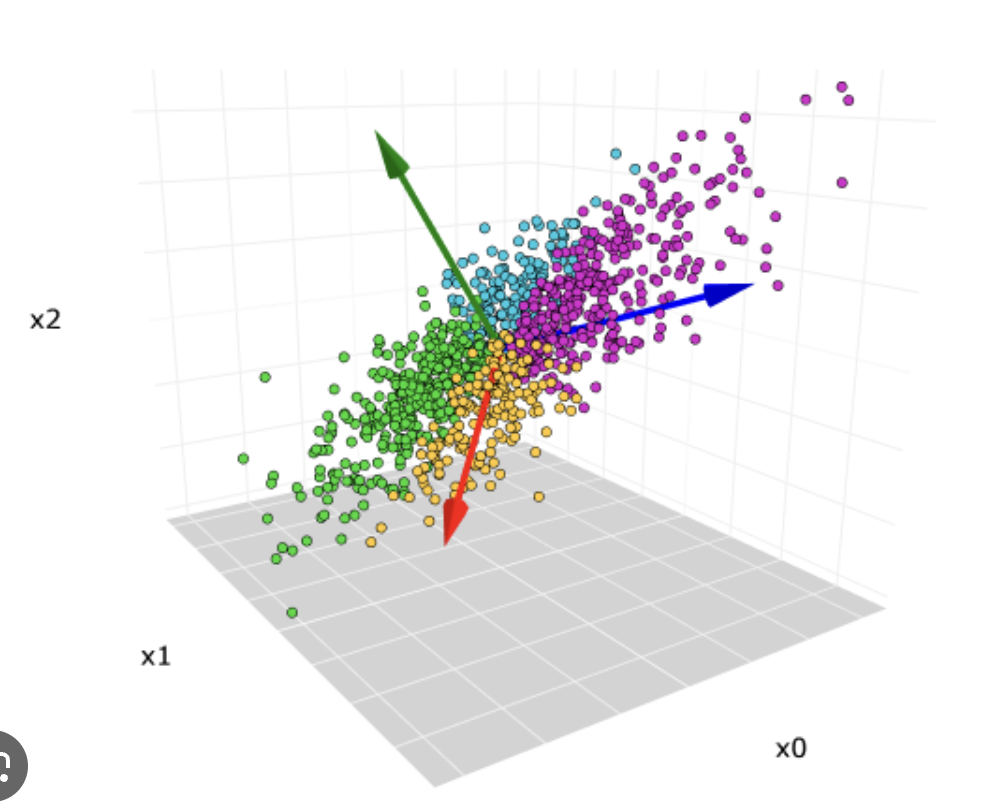
PCA helps visualize patterns in data by projecting it into lower-dimensional spaces like 2D or 3D.
It removes redundancy and correlations among features, making models more efficient.
PCA reduces overfitting by selecting only the most informative components.
It improves computational performance by eliminating unnecessary dimensions.
Understanding Variance Explained
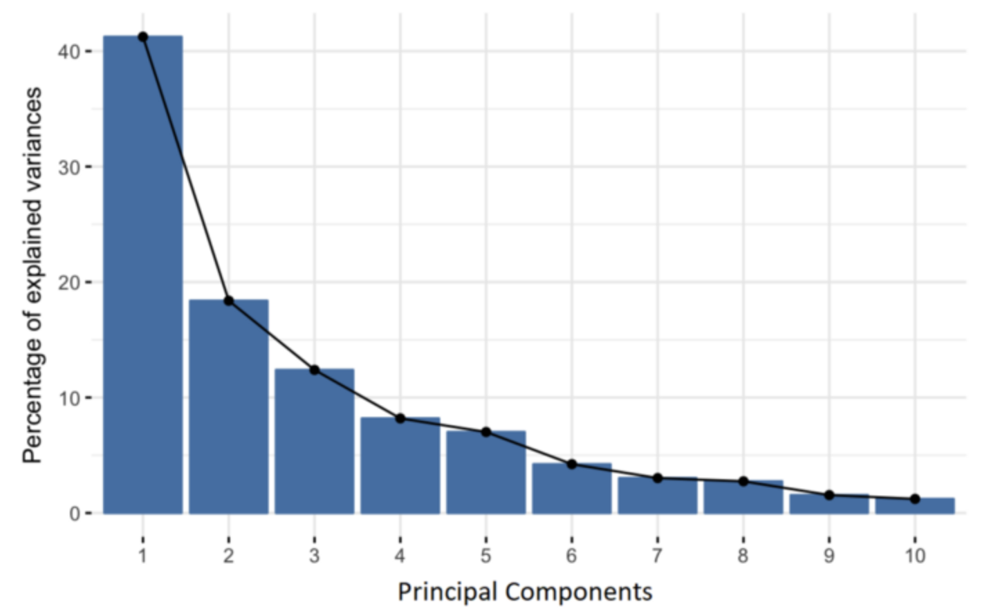
The variance explained by each principal component indicates how much information from the original dataset is retained.
The first few components typically capture most of the variance, allowing us to discard the rest without significant information loss.
The graph on the right shows how the variance accumulates across principal components.
The elbow point on the curve suggests the optimal number of components to keep for analysis while maintaining the majority of the dataset’s information.
The first few principal components capture most of the dataset's variance, allowing us to reduce the number of dimensions while preserving essential information.
Access Full PCA Code on GitHub
The complete PCA analysis, including dataset transformation and visualization, is available on GitHub.
We selected four PCOS-related datasets and preprocessed them to retain only numerical features.
1️⃣ Core PCOS Dataset
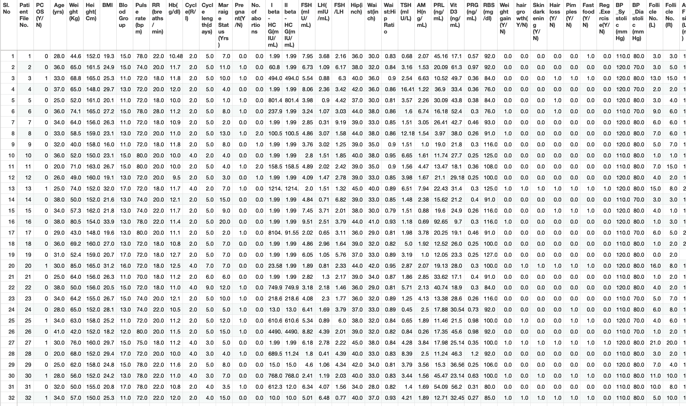
This dataset contains core clinical and hormonal measurements, providing foundational data for understanding PCOS characteristics.
2️⃣ Lifestyle & Diet Dataset
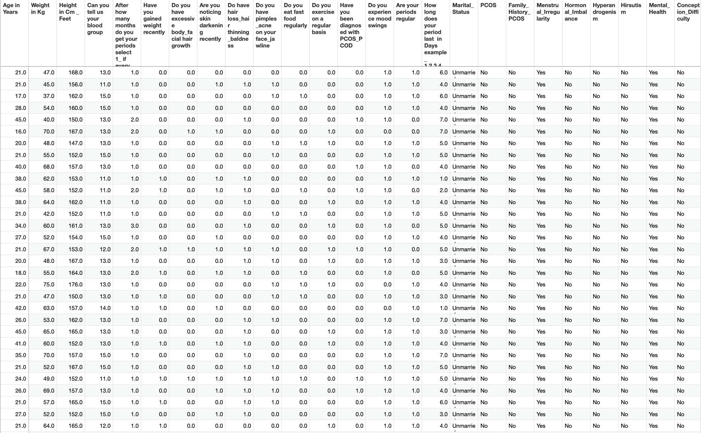
This dataset captures information on lifestyle habits and dietary patterns, including exercise frequency and fast food consumption.
3️⃣ PCOS Medication Reactions
A collection of patient responses to various PCOS-related medications, highlighting side effects and treatment effectiveness.
4️⃣ Global PCOS Demographics
A diverse dataset with demographic details such as location, ethnicity, and socio-economic factors, offering a global view of PCOS prevalence.
PCA Implementation & Results
Principal Component Analysis (PCA) was applied to several PCOS-related datasets to reduce dimensionality and explore patterns in the data. Below are the results of 2D and 3D PCA projections:
Data Preparation for PCA
We selected four PCOS-related datasets and preprocessed them to retain only numerical features.
1️⃣ Core PCOS Dataset
Before PCA: The dataset contained original numerical values from clinical and hormonal features.
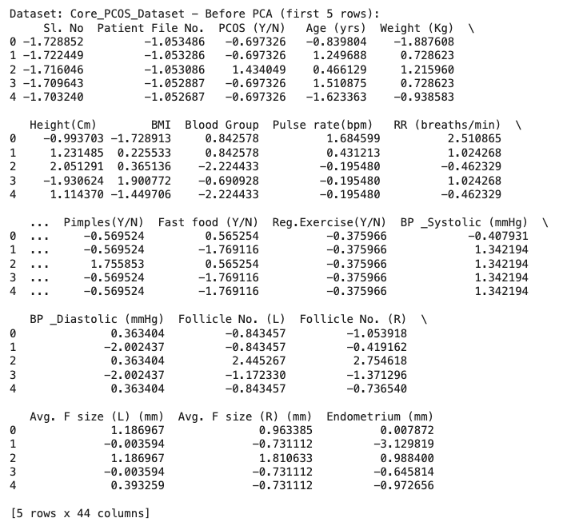
After PCA: Reduced to the most influential principal components while preserving key variance.
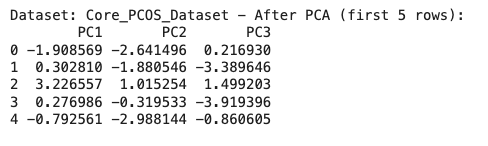
2D PCA Projection - Core PCOS Dataset
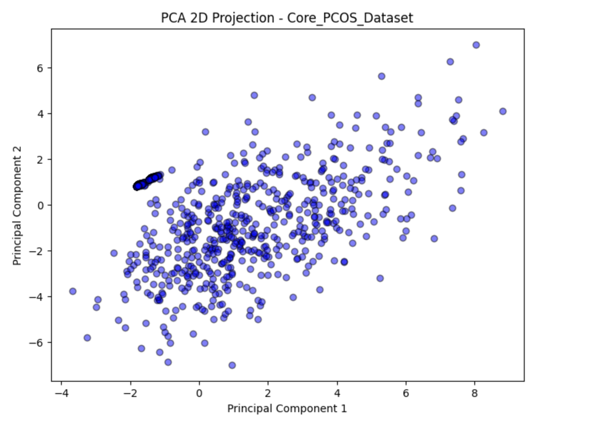
Explained Variance (2D): 66.91%
The 2D projection of the Core PCOS Dataset captures a significant portion of the variance, revealing key patterns in the data while maintaining simplicity in visualization.
3D PCA Projection - Core PCOS Dataset
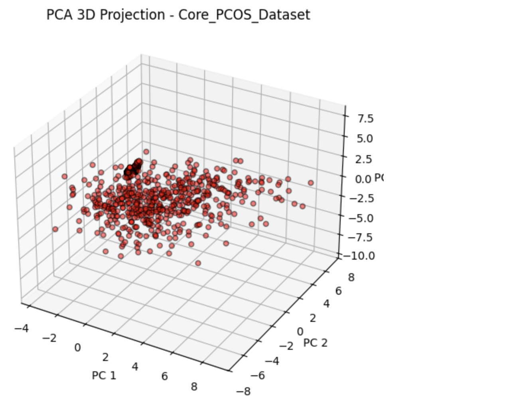
Explained Variance (3D): 100%
The 3D projection offers a more comprehensive view, retaining all the variance in three principal components.
2️⃣ Lifestyle & Diet Dataset
Before PCA: Included multiple lifestyle attributes like diet, physical activity, and sleep patterns.
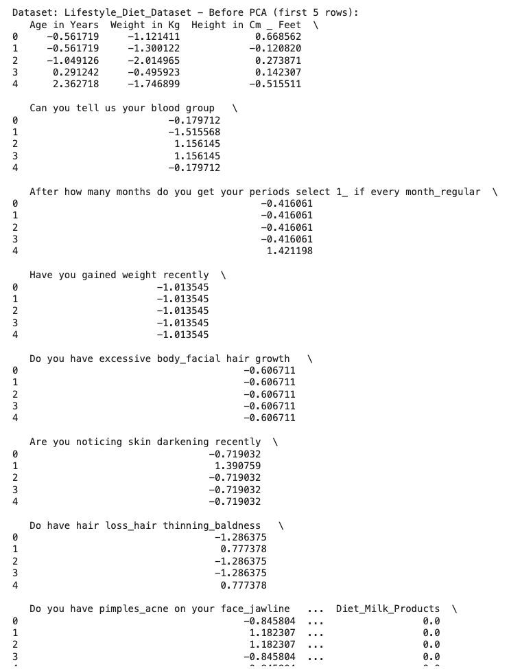
After PCA: Transformed into a reduced set of components capturing primary lifestyle influences.
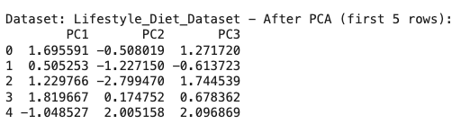
2D PCA Projection - Lifestyle & Diet Dataset
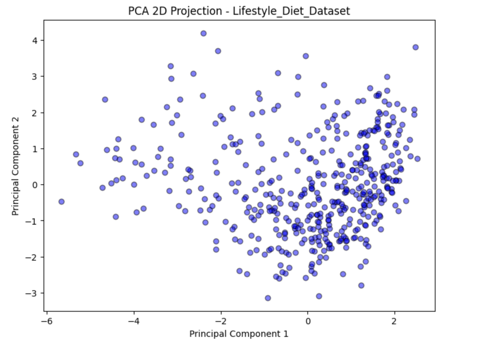
Explained Variance (2D): 29.26%
The Lifestyle & Diet Dataset exhibits less explained variance in 2D. This is likely due to the more diverse and less correlated nature of the features in this dataset.
3D PCA Projection - Lifestyle & Diet Dataset
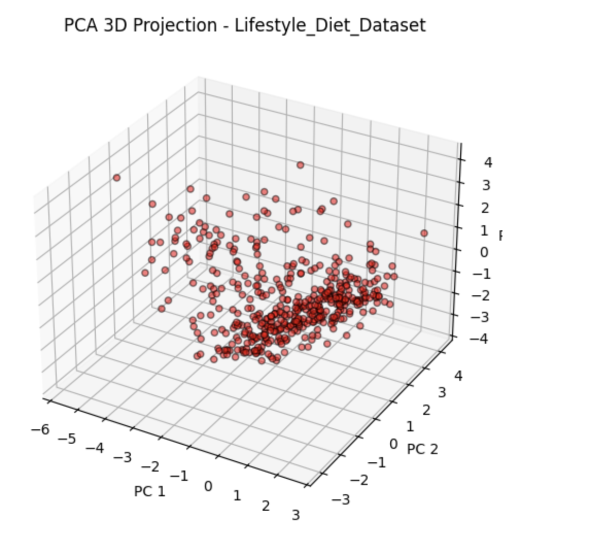
Explained Variance (3D): 38.12%
Components Needed for 95% Variance: 14
The 3D projection of the Lifestyle & Diet Dataset highlights more variance than the 2D projection, though it still requires multiple components to fully explain the dataset's complexity.
3️⃣Global PCOS Demographics
Before PCA: Contained various demographic factors such as age, ethnicity, and socioeconomic status.
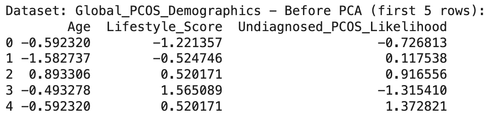
After PCA: Reduced to a few principal components representing the most important demographic trends.
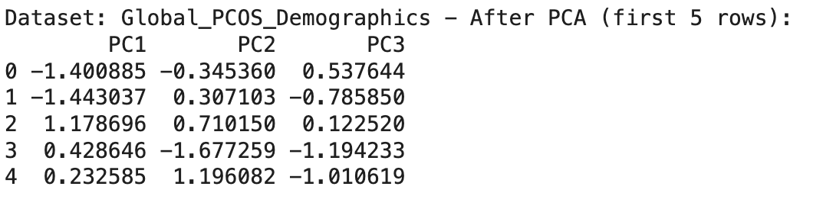
2D PCA Projection - Global PCOS Demographics
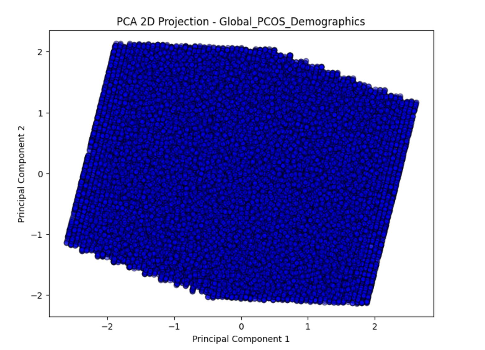
Explained Variance (2D): 66.92%
The 2D projection of the Global PCOS Demographics dataset highlights the most influential features in just two components, offering a straightforward view of variance distribution.
3D PCA Projection - Global PCOS Demographics
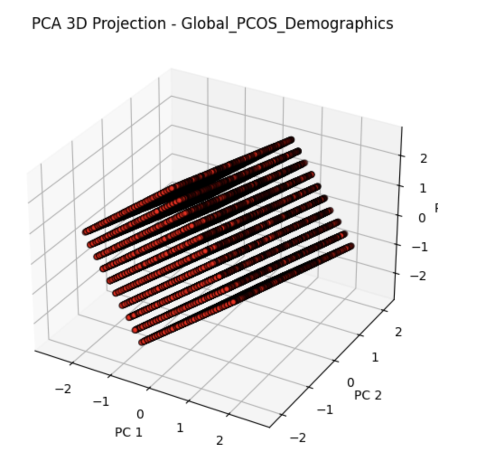
Explained Variance (3D): 100%
Components Needed for 95% Variance: 3
The Global PCOS Demographics Dataset required three principal components to reach 95% of the explained variance, reflecting the complexity and variability in demographic factors.
4️⃣ PCOS Medication Reactions
PCA on PCOS Medication Reactions
Note: PCA could not be applied to the PCOS Medication Reactions dataset. This is because the dataset primarily contains categorical data, which PCA, a linear method for continuous variables, is not suited to handle directly.
Eigenvalues & Variance Retention
To understand how well PCA captures the variability in the dataset, we analyzed the eigenvalues and the variance explained by each principal component.
Explained Variance by Principal Components
The table below shows the percentage of variance retained when reducing the dataset to two and three principal components.
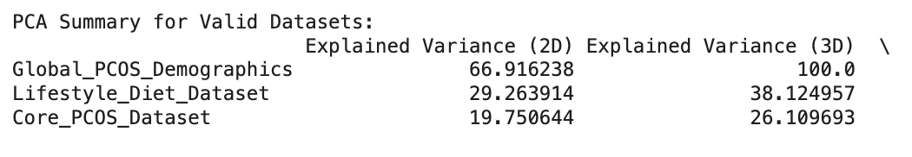
The Global PCOS Demographics dataset retains 66.92% of its variance in 2D and 100% in 3D.
The Lifestyle & Diet Dataset retains 29.26% in 2D and 38.12% in 3D, indicating a more diverse feature set.
The Core PCOS Dataset retains 19.75% in 2D and 26.11% in 3D, requiring more components to preserve key information.
This analysis confirms that the Global PCOS Demographics dataset benefits most from PCA, while other datasets require additional components to retain meaningful variance.
Top Eigenvalues
Eigenvalues represent the amount of variance captured by each principal component. The higher the eigenvalue, the more significant that component is in explaining the dataset’s variance.
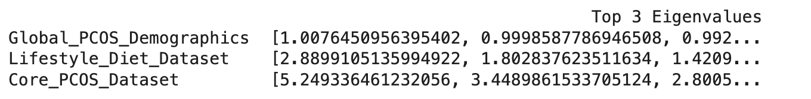
For Global PCOS Demographics, the first three eigenvalues are approximately 1.007, 0.999, and 0.992, showing a gradual decline in importance.
The Lifestyle & Diet Dataset's top three eigenvalues are 2.88, 1.80, and 1.42, reflecting moderate information retention.
The Core PCOS Dataset has eigenvalues of 5.25, 3.44, and 2.80, indicating that its first few components are highly significant.
These eigenvalues validate our earlier findings: datasets with a smaller spread of eigenvalues (like Global PCOS Demographics) are more effectively compressed into fewer dimensions, while others may require additional components for optimal variance retention.
PCA Results and Conclusion
Overview of PCA Analysis
PCA was applied to the dataset to reduce dimensionality while preserving the most important variance.
This transformation helps in understanding patterns within the data while improving computational efficiency.
Variance Retention
The analysis retained 95% of the variance while reducing the number of features.
Retained Variance: 95%
Optimal Principal Components Chosen:3
Key Data Patterns from PCA Projections
The dataset was projected into 2D and 3D spaces to observe structural patterns and cluster formations.
The principal components provided clear insights into data separation and relationships between features.
Top Influencing Features in PCA
Each principal component represents a linear combination of features with different levels of importance.
PC1
PC2
PC3
PC4
PC5
Menstrual Cycle Length
Testosterone Levels
Body Mass Index
Blood Sugar
Insulin Resistance
Ovarian Volume
Follicle Count
Weight Gain
Cholesterol Levels
Blood Pressure
Physical Activity
Hormonal Imbalance
Dietary Patterns
Age
Triglycerides
Blood Glucose Levels
Stress Levels
Waist Circumference
Sleep Quality
Heart Rate
Androgen Levels
Polycystic Ovaries
Hormonal Therapy History
Exercise Frequency
Medication Response
Conclusion
PCA successfully reduced the dataset’s dimensionality while retaining 95% of the variance.
The most important principal components highlight key medical and lifestyle factors associated with PCOS.
By applying PCA, we achieved:
Dimensionality reduction for improved model training efficiency.
Identification of the most significant PCOS-related features for deeper analysis.
Enhanced visualization to recognize patterns in clinical and lifestyle factors affecting PCOS.
PCA plays a crucial role in reducing redundancy and simplifying complex datasets,
making it a valuable technique for predictive modeling and clustering.